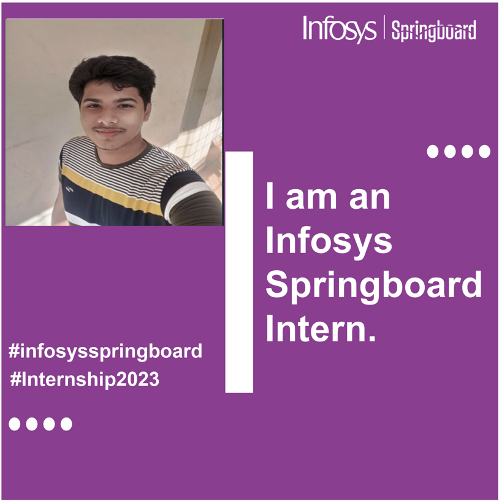
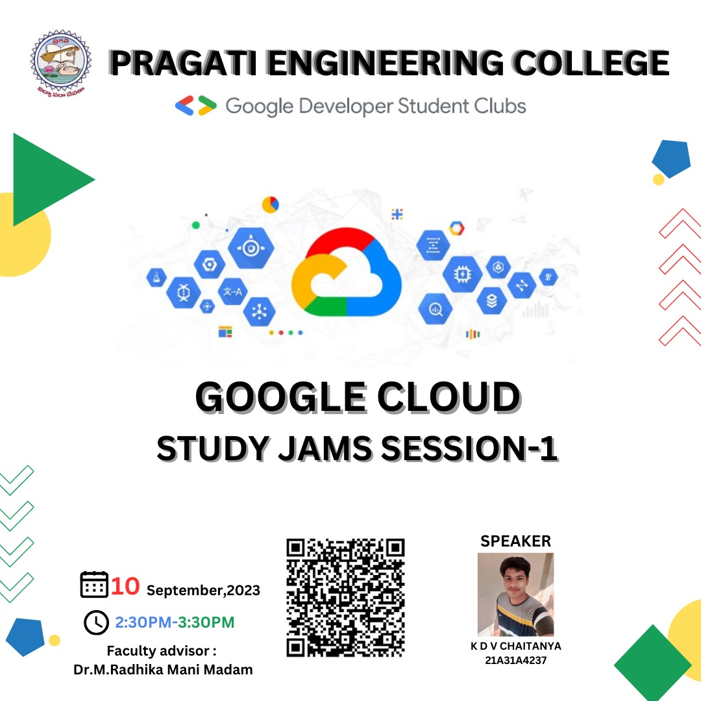
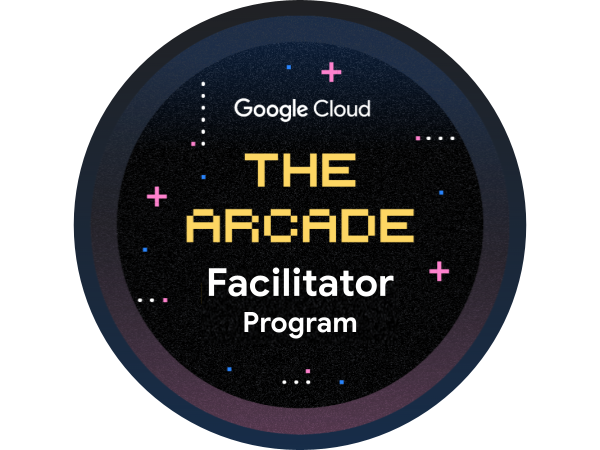

Profile
Hii everyone this is chaitanya a btech 3rd year undergraduate student at pragati engineering college,kakinada.
Back to homepageProjects & Internships
View some of my major selected projects below. More information can be found at github.
YouTube Medium LinkdelnSalesForce Virtual Internship
During the 8 Weeks period of Virtual Internship (May-July 2023), I had learnt some Fundamentals Organizational Setup Relationship & Process Automation Types Of Flows & Security Apex, Testing & Debugging VS Code Setup & CLI Setup Lightning Web Components (LWC) & API.
Infosys Spring Board-Let's Create Serverless Functions
Its a 12 week internship in which I and along with our 8 team mates created some serverless functions.
Book Chapter(Deep Learning in Personalized Healthcare and Decision Support) - ELSEVIER (08/2022 - 07/2023)

•Published a book chapter -Development of a no-regret deep learning framework for efficient clinical decision making( eBook ISBN: 9780443194146)
Book linkArticle(Role of Synthetic Data for Improved AI Accuracy) - IRO Journal (07/2022 - 09/2023)

•Published an Article - Role of Synthetic Data for Improved AI Accuracy
• Synthetic data has emerged as a promising solution to address these challenges and enhance AI accuracy. This study explores the role of synthetic data in improving AI accuracy.
Keywords: AI Synthetic Data Privacy Security Bias Fairness
Article linkAICTE Eduskills Virtual Internships
I had completed the following 8-week virtual internships provided by eduskills foundation under AICTE.
Successfully completed 10 weeks Robotic Process Automation(RPA) virtual Intenship supported by BLUEPRISM university
Completed 10 weeks virutal internship from Juniper Networks
sucessfully completed my 10 weeks internship by celonis process mining where i had done with the technical rising star
Achievements
My complete work history is available on LinkedIn.
Google Cloud Technology lead - Pragati GDSC
Iam a core team member as google cloud techology lead at pragati engineering college GDSC.where i had conducted some sessions for the benefit of the students.
GDSC-PRAGATI Aug 2023 - Present
Google Cloud Study Jams - Session 1And iam also a Google Cloud Study jams Facilitator-2023.Where i made my college under tier-1 category...by reaching the milestones.
Google cloud Arcade Facilitator
Facilitated over 500+ students in their cloud journey over 2 months of time period.
Jul 2022 - Aug 2022
In this 2 months span of time we had sucessfully reached our ultimate milestone by facilitating good number of students with our time management .
Key contributions:
- Covererd some basic fundamentals on Google Cloud Platform
- Introduced some services provided through the GCP
- Provided guidance on taking the challenges in cloud labs
UI path hack-a-bot competition 2nd prize
certificate of appreciation from UiPath Community on the one day event of Hack-A-Bot which was conducted at Pragati Engineering College.In which had secured 2ND price.
april-2022
The work flow.
Key contributions:
- We made a automation named "THE CYBORG" which is a Bulk Email Generator.
- By which we could easily create bulk certificates through UI PATH STUDIO which is a RPA tool.
- Along with the tools like excel and powerpoint presentation
Education
Pragati Engineering College,Surampalem
B.Tech Cse(Artificial Intelligence & Machine Learning)
Learning Various technologies related to the IT industry particularly AI&ML
Sasi New Gen Junior College,Velivennu
Intermediate MPC, 2019-2021
Studied about MPC
Pratibha English Medium High School, Jangareddigudem
High Schooling,2018-2019